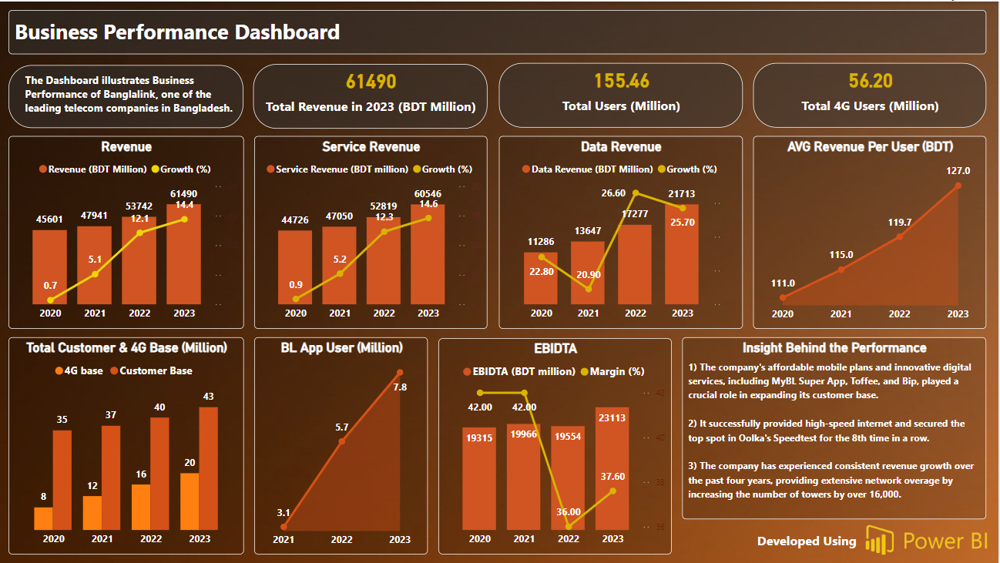
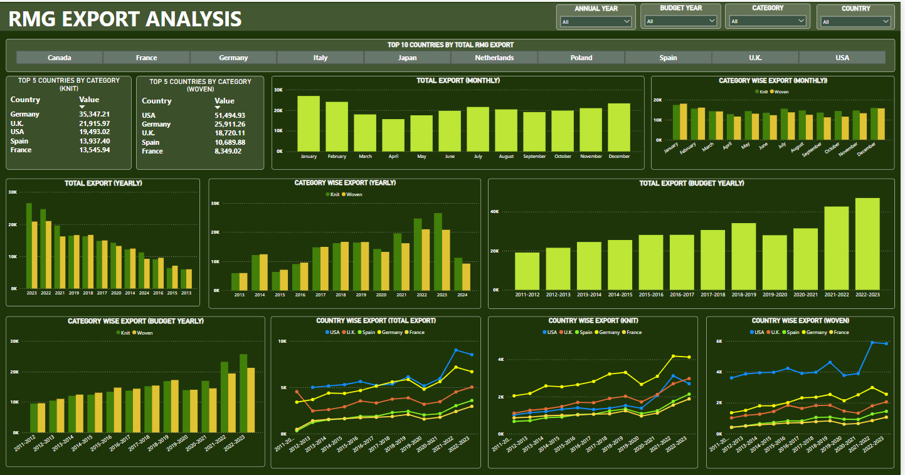

🔧 Professional Projects
🔍 Web Scraping
- Extracted importer company info from BARVIDA using BeautifulSoup, structuring names, locations, and contacts — View Notebook
- Scraped Supreme Court Bar Association member directory from SCBA website using Selenium — extracted lawyer names, designations, and contact info — View Notebook
🧼 Data Cleaning & Preprocessing
- Cleaned and transformed structured data using Excel, Power Query, and DAX for reporting consistency
- Preprocessed datasets using pandas, NumPy, and regex for data normalization, filtering, and reshaping
- Handled image-based data using OpenCV for resizing, thresholding, and noise reduction in vision-related tasks
- Streamlined recurring workflows and ensured data integrity across multi-source reports and models
📊 Power BI Dashboards

🏘️ Real Estate Sales Dashboard
Visualized housing inventory and profit distribution across locations. Enabled dynamic filtering by property type and sales agents for deeper insights.
Download PBIX

📈 Business Performance Dashboard
Tracked key telecom KPIs like total revenue, EBIDTA, and 4G growth. Built to support executive-level decisions with clean visual storytelling.

🌍 RMG Export Analysis
Highlighted knit and woven export trends by country and category. Included budget and fiscal year comparisons to support trade analysis.